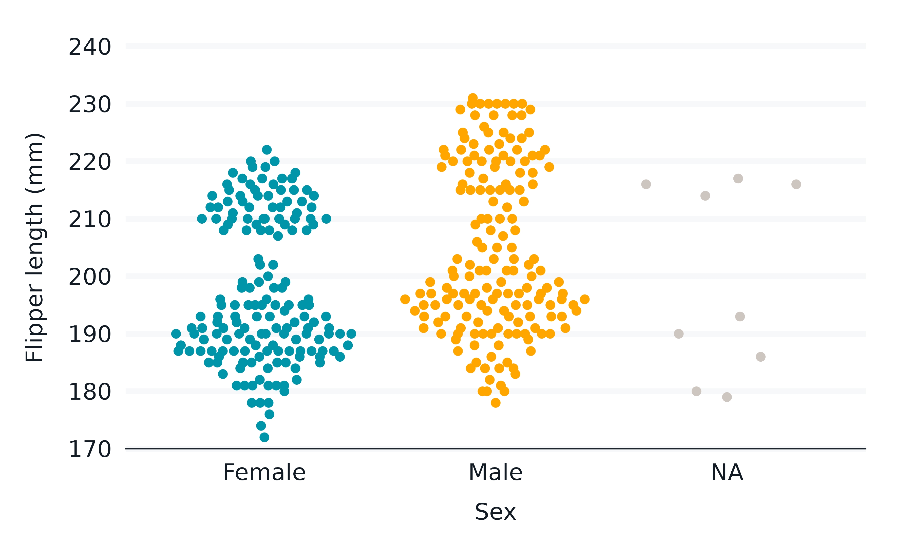
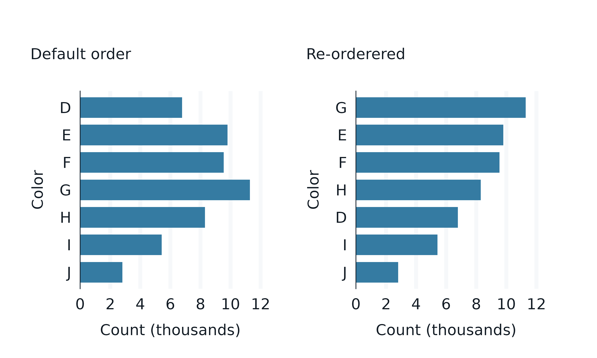
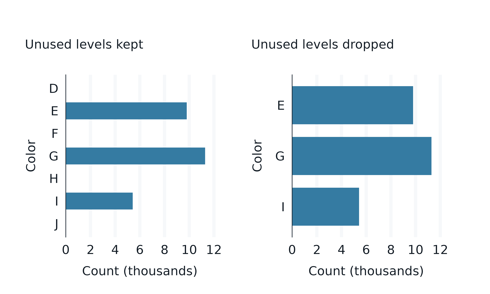
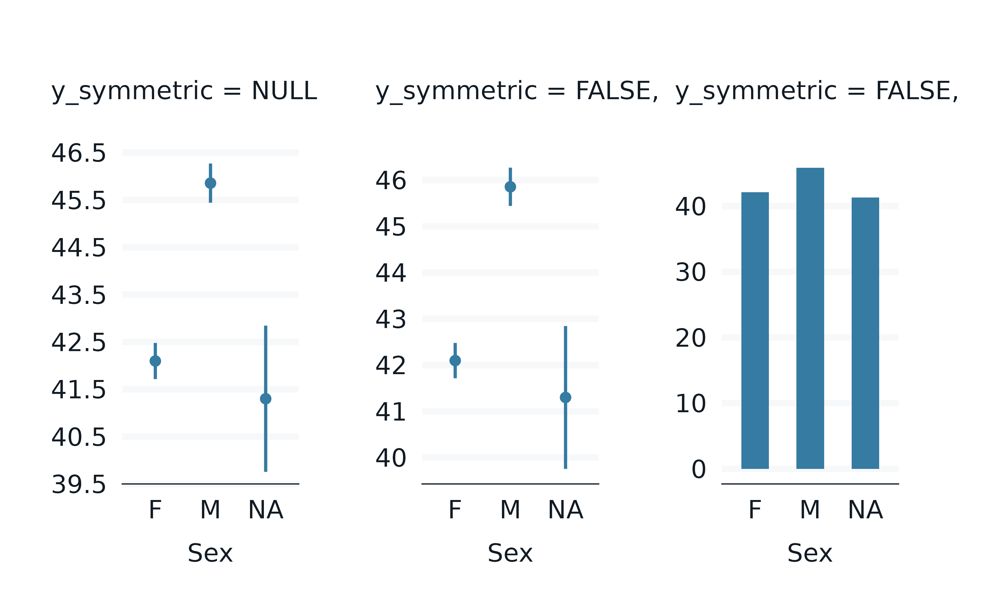
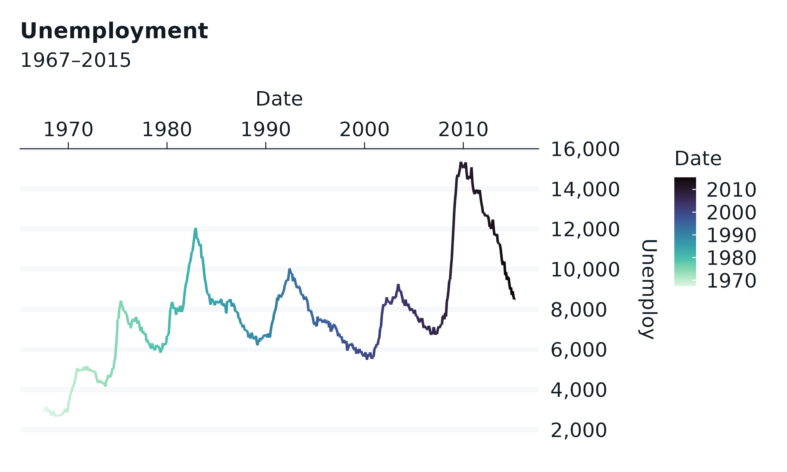
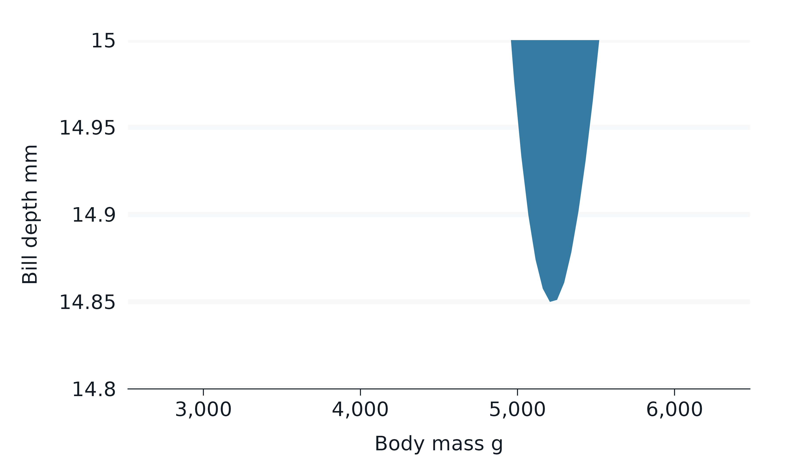
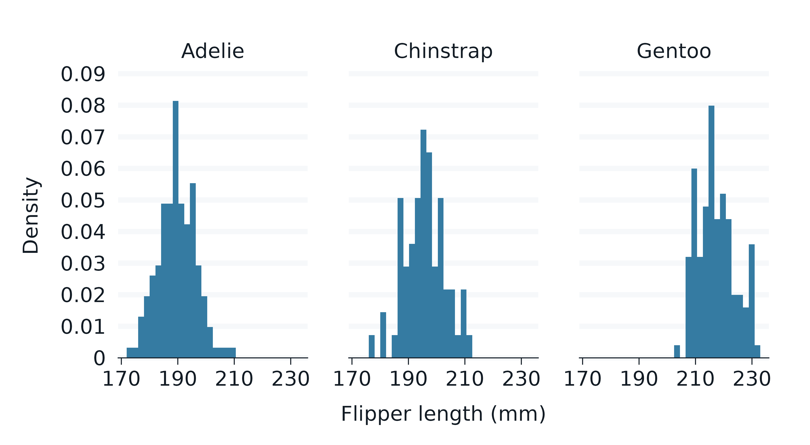

Overview
This article will demonstrate a random assortment of content, including some of which is more advanced.
- Change the
statof the layer - Change the
positionof the layer - Use
+ *_mode_*where axis-lines and gridlines are not as wanted - Reorder and/or reverse categorical variables
- Drop unused categorical variable values
- Transform scales to
"log"etc - Correct the default orientation
- Avoid the ‘symmetric’ scale
- Avoid the mode side-effects
- Change the
*_positionof positional axes - Zoom in or out on scales
- Use delayed evaluation
- Rescale a diverging col scale
- Add a legend within the panel
library(dplyr)
#> Error in get(paste0(generic, ".", class), envir = get_method_env()) :
#> object 'type_sum.accel' not found
library(tidyr)
library(forcats)
library(stringr)
library(ggplot2)
library(scales)
library(ggblanket)
library(patchwork)
library(palmerpenguins)
set_blanket()
penguins2 <- penguins |>
labelled::set_variable_labels(
bill_length_mm = "Bill length (mm)",
bill_depth_mm = "Bill depth (mm)",
flipper_length_mm = "Flipper length (mm)",
body_mass_g = "Body mass (g)",
) |>
mutate(sex = factor(sex, labels = c("Female", "Male")))1. Change the stat of the layer
The default stat of each gg_* function can
be changed.
penguins2 |>
gg_pointrange(
stat = "summary",
x = species,
y = flipper_length_mm,
)
library(ggforce)
ggplot2::economics |>
slice_head(n = 35) |>
gg_path(
stat = "bspline", n = 100,
x = date,
y = unemploy,
y_label = "Unemployment",
linewidth = 1,
) 2. Change the position of the layer
The default position of each gg_* function
can be changed.
penguins2 |>
gg_point(
position = ggbeeswarm::position_quasirandom(),
x = sex,
y = flipper_length_mm,
col = sex,
) +
theme(legend.position = "none")
3. Use + *_mode_* where axis-lines and gridlines are
not as wanted
Sometimes the plot might guess the removal of gridlines and
axis-line/ticks incorrectly. In these situations, you can
+ *_mode_* on to the plot, and then remove whatever you
want.
msleep |>
gg_point(
x = bodywt,
y = brainwt,
col = vore,
col_labels = str_to_sentence,
x_transform = "log10",
y_transform = "log10",
) +
light_mode_r() +
guides(
x = guide_axis_logticks(),
y = guide_axis_logticks(),
) 
4. Reorder and/or reverse categorical variables
ggblanket requires unquoted variables only for x,
y, col, facet,
facet2 and alpha. You can often manipulate the
data prior to plotting to achieve what you want (e.g. using
tidyr::drop_na, forcats::fct_rev and/or
forcats::fct_reorder).
p1 <- diamonds |>
count(color) |>
gg_col(
x = n,
y = color,
width = 0.75,
x_labels = \(x) x / 1000,
x_label = "Count (thousands)",
subtitle = "\nDefault order"
)
p2 <- diamonds |>
count(color) |>
mutate(color = fct_rev(fct_reorder(color, n))) |>
gg_col(
x = n,
y = color,
width = 0.75,
x_labels = \(x) x / 1000,
x_label = "Count (thousands)",
subtitle = "\nRe-orderered"
)
p1 + p2
5. Drop unused categorical variable values
ggblanket keeps unused factor levels in the plot. If users wish to
drop unused levels they should likewise do it in the data prior to
plotting using forcats::fct_drop.
p1 <- diamonds |>
count(color) |>
filter(color %in% c("E", "G", "I")) |>
gg_col(
x = n,
y = color,
width = 0.75,
x_labels = \(x) x / 1000,
x_label = "Count (thousands)",
subtitle = "\nUnused levels kept",
)
p2 <- diamonds |>
count(color) |>
filter(color %in% c("E", "G", "I")) |>
mutate(color = forcats::fct_drop(color)) |>
gg_col(
x = n,
y = color,
width = 0.75,
x_labels = \(x) x / 1000,
x_label = "Count (thousands)",
subtitle = "\nUnused levels dropped",
)
p1 + p26. Transform scales to "log" etc
Transform objects (e.g. transform_log() or character
strings of these can be used to transform scales - including combining
these.
p1 <- pressure |>
gg_point(
x = temperature,
y = pressure,
x_breaks_n = 4,
y_breaks_n = 4,
subtitle = "\nDefault",
)
p2 <- pressure |>
gg_point(
x = temperature,
y = pressure,
x_breaks_n = 4,
y_breaks_n = 4,
y_transform = "reverse",
subtitle = "\nReverse",
)
p3 <- pressure |>
gg_point(
x = temperature,
y = pressure,
x_breaks_n = 4,
y_breaks_n = 4,
y_transform = "sqrt",
subtitle = "\nSqrt",
)
p4 <- pressure |>
gg_point(
x = temperature,
y = pressure,
x_breaks_n = 4,
y_breaks_n = 4,
y_transform = c("sqrt", "reverse"),
subtitle = "\nSqrt & Reverse",
)
(p1 + p2) / (p3 + p4)7. Correct the default orientation
The gg_* function guesses the *_orientation
of the plot to determine how to make continuous axes and what
side-effects to have on the provided mode. If it guesses incorrectly,
use either the x_orientation or y_orientation
argument.
p1 <- penguins2 |>
gg_point(
x = bill_depth_mm,
y = bill_length_mm,
subtitle = "\nDefault orientation",
)
p2 <- penguins2 |>
gg_point(
x = bill_depth_mm,
y = bill_length_mm,
mode_orientation = "y",
subtitle = "\nAdjusted orientation",
)
p1 + p2
8. Avoid the ‘symmetric’ scale
Symmetric scales can be turned off or on using
*_symmetric arguments.
p1 <- penguins2 |>
gg_pointrange(
x = sex,
y = bill_length_mm,
stat = "summary",
position = position_dodge(),
x_labels = \(x) str_sub(x, 1, 1),
subtitle = "\ny_symmetric = NULL",
) +
labs(y = NULL)
p2 <- penguins2 |>
gg_pointrange(
x = sex,
y = bill_length_mm,
stat = "summary",
position = position_dodge(),
x_labels = \(x) str_sub(x, 1, 1),
y_symmetric = FALSE,
subtitle = "\ny_symmetric = FALSE,",
) +
labs(y = NULL)
p3 <- penguins2 |>
gg_col(
x = sex,
y = bill_length_mm,
stat = "summary",
position = position_dodge(),
width = 0.5,
x_labels = \(x) str_sub(x, 1, 1),
y_symmetric = FALSE,
subtitle = "\ny_symmetric = FALSE,",
) +
labs(y = NULL)
p1 + p2 + p3
9. Avoid the mode side-effects
Where *_orientation = TRUE, it will remove the relevant
axis line/ticks and the gridlines from the mode theme.
But you can avoid this by +-ing your theme on to the
plot, instead of adding it to the mode argument.
p1 <- penguins2 |>
gg_jitter(
x = sex,
y = bill_depth_mm,
subtitle = "\nmode = light_more_r()",
)
p2 <- penguins2 |>
gg_jitter(
x = sex,
y = bill_depth_mm,
subtitle = "\n+ light_more_r()",
) +
light_mode_r()
p1 + p210. Change the *_position of positional axes
Positional axes can be changed using *_position.
Note that for x_position = "top", a caption must be
added or modified to make this work nicely with a *_mode_*
theme.
economics |>
gg_line(
x = date,
y = unemploy,
col = date,
y_position = "right",
x_position = "top",
caption = "",
title = "Unemployment",
subtitle = "1967\u20132015",
) 11. Zoom in or out on scales
There are no *_limits arguments in ggblanket.
Instead, users should use a combination of filtering the data, adding
*_expand_limits and
coord = coord_cartesian(xlim = ..., ylim = ...) arguments
etc.
#To Zoom out, use *_expand_limits:
penguins |>
gg_smooth(
x = body_mass_g,
y = bill_depth_mm,
x_expand_limits = c(0),
y_expand_limits = c(10, 25),
se = TRUE,
) 
#To zoom-in when the stat equals "identity", use dplyr::filter
penguins |>
filter(bill_depth_mm < 15) |>
gg_point(
x = bill_depth_mm,
y = body_mass_g,
) 
#To zoom-in when the stat does _not_ equal "identity", use coord_cartesian
#Then either recreate the breaks, or turn off the symmetric axis
penguins |>
gg_smooth(
x = body_mass_g,
y = bill_depth_mm,
coord = coord_cartesian(ylim = c(14.8, 15)),
y_breaks = scales::breaks_width(0.05),
se = TRUE,
# y_symmetric = FALSE,
) 12. Use delayed evaluation
The mapping argument can be used for delayed evaluation
with the ggplot2::after_stat function.
penguins2 |>
gg_histogram(
x = flipper_length_mm,
mapping = aes(y = after_stat(density)),
facet = species,
)
faithfuld |>
gg_contour(
x = waiting,
y = eruptions,
z = density,
mapping = aes(colour = after_stat(level)),
bins = 8,
)13. Rescale a diverging col scale
Use col_rescale to rescale a diverging scale around a
central point.
rescale_vctr <- sort(c(range(mpg$cty), 15))
mpg |>
gg_point(
x = displ,
y = hwy,
col = cty,
col_palette = c(navy, teal, "white", orange, red),
col_rescale = scales::rescale(rescale_vctr),
col_breaks = scales::breaks_width(5),
mode = dark_mode_r(),
)14. Add a legend within the panel
set_blanket()
penguins2 |>
gg_histogram(
x = flipper_length_mm,
col = species,
) +
theme(legend.position = "inside") +
theme(legend.position.inside = c(1, 0.975)) +
theme(legend.justification = c(1, 1))